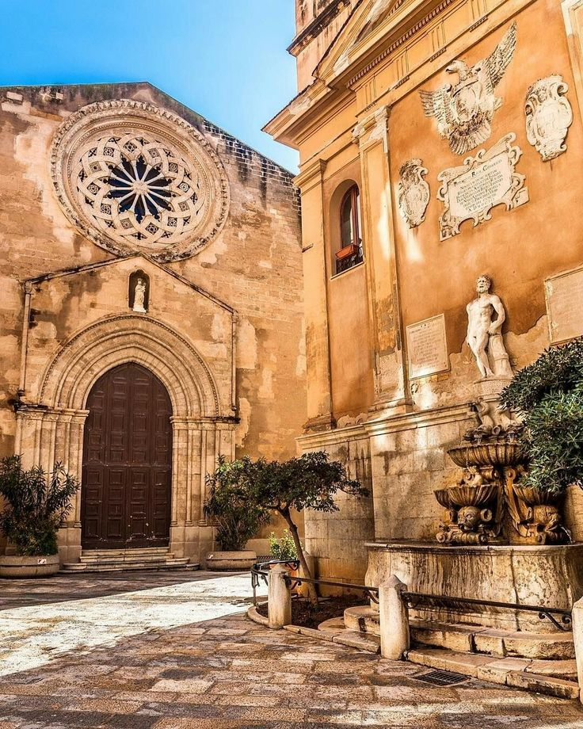
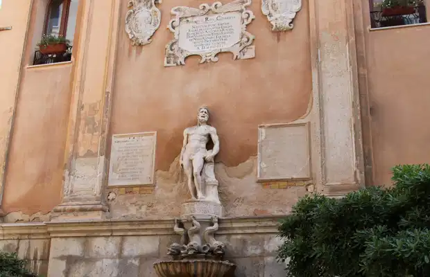
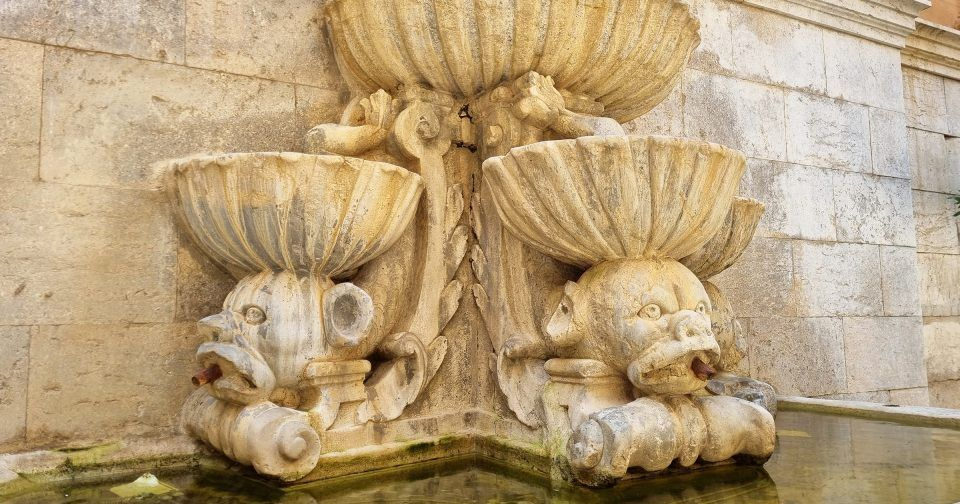

Trapani
Piazza Saturno è uno degli angoli più intimi e carichi di storia di Trapani, dominata dalla fontana barocca dedicata al mitico dio del tempo. La leggenda vuole che Saturno sia il vero fondatore della città: si narra che il dio, dopo essere stato spodestato dal figlio Giove, cadde dal cielo brandendo una falce che, toccando il mare, diede origine alla caratteristica forma a falce del promontorio trapanese.
Piazza Saturno è una piccola piazzetta situata nel centro storico di Trapani, in Sicilia. La piazza prende il nome da una fontana che si trova al suo centro, dedicata a Saturno, il dio romano del tempo e dell'agricoltura. La fontana è un importante punto di riferimento per i residenti e i visitatori della città, ed è spesso utilizzata come luogo di incontro e di relax. La piazza è circondata da edifici storici e negozi, ed è un luogo ideale per passeggiare e godersi l'atmosfera unica di Trapani.


Saturno è considerato uno dei miti della città, addirittura il dio patrono e fondatore di Trapani. Tra le leggende preposte a “raccontare” l’origine della città, oltre a quella che attribuisce la sua fondazione a Cerere, troviamo questa seconda leggenda che narra di Saturno, dio del cielo, che, dopo aver evirato il padre Urano, perse la falce che teneva in mano. Falce che, cadendo in mare, creò quel lembo di terra che fu poi Trapani.
Così Saturno divenne il dio patrono di Trapani ed ecco perchè ancora oggi si può ammirare la sua statua nella fontana della piazzetta omonima. E’ una fontana di importanza storica che esige opere di attento e continuo restauro per preservarla dagli agenti atmosferici, particolari anche per la prossimità del mare e, soprattutto, per gli effetti del calcare dovuto allo scorrere scenografico, continuo, dell’acqua.

Scansiona il codice QR per raggiungere Piazza Saturno.